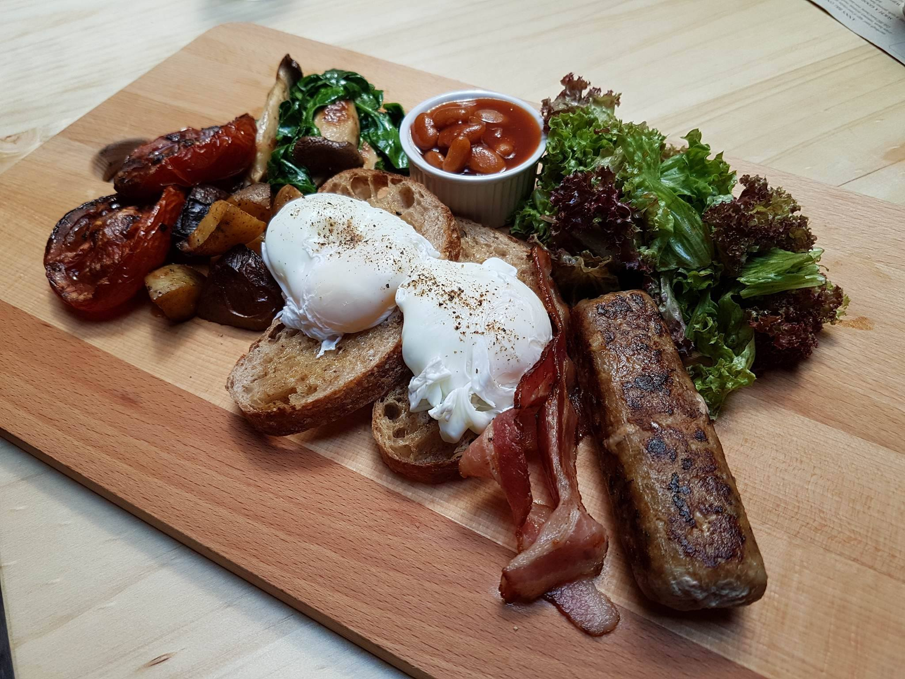
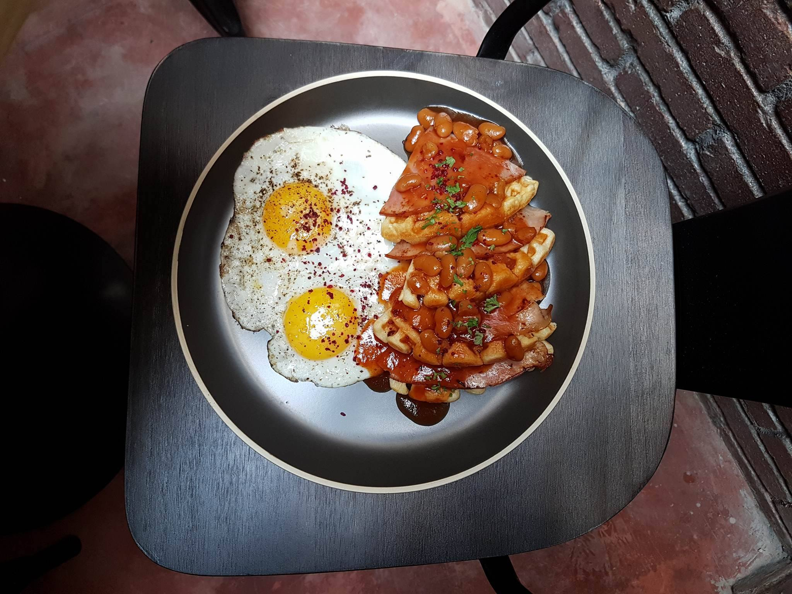

Urban Daybreak - All Day Breakfast
Urban Daybreak is an artisan cafe located in the heart of George Town Penang that newly opened in May. The road has longed been bustling with a cafe scene with Book Sandwich Cafe, Ice Estate and China House, Urban Daybreak is another great addition to the street.
Inspired by the Australian breakfast and brunch styles, Urban Daybreak spearheads the culture there with an unique awesome twist.
 ANN'S BIG ONE - RM25.50, it’s truly big, just as its name sounds. Attention! This is really something to-die-for, we love it! It was made up of my favourite breakfast wants. It comes with toast, eggs, sausage, bacon, potatoes, mushroom, spinash, baked beans, tomatoes and salad. All is well served!  SUCH A GOOD WAFFLE – RM 18.50. The fried egg’s taste was kinda special, salty and has pepper kick at the back. The waffle was soft and fragrant, combos with baked beans and gammon ham, superb!In short, strike while the iron is hot. If you are looking for new breakfast and brunch spot, this is the place to be. Everything was great over here. One of the drawbacks could be their operating hours (7.30am-3.00pm only). So, plan your schedule ahead to avoid disappointment.